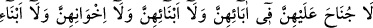
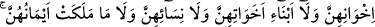
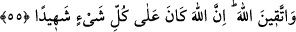

Molla Câmî der ki:
Lâ, kâinâtı içen bir timsahtır,
Arş’tan dünyâya kadar her şeyi ağzına çekmiştir,
O timsah niyetli nereye yönelse,
Benden ve bizden ne koku kalır, ne renk.
Gerçi Lâ yokluk karanlığını ihtivâ ediyorsa da,
İllâ, ezelîlik nûrunun parlaklığına sahiptir.
Lâ, kesret (çokluk) kilimini yayınca,
İllâ, vahdet kadehinden şarap verir,
Çokluk perdesini kaldırmadığın sürece,
Vahdet (birlik) güneşi ışık vermez.
Eğer bir zaman benliğinden kurtulursan,
Özel nur feyzinin iniş yeri olursun.
O feyzin cezbesi istilâ eder,
Lâ’dan da kurtulursun, illâ’dan da.
Hak Teâlâ marifet (Allâh’ı tanıma) nurunu kime verirse,
O kişinin sıfatı zâhiren halk ile, gerçekte onlardan ayrı olur.
Ruhu Hak ile, bedeni ise Onun gayrısıyla birlikte olur,
Bedeni Hak’tan, ruhu ise Hakk’ın dışındakilerden ayrı olur.
55. Onlara (Peygamber’in hanımlarına) babaları, oğulları, kardeşleri,
kardeşlerinin oğulları, kız kardeşlerinin oğulları, kadınları (mü’min kadınlar) ve
ellerinin altında bulunan câriyelerinden dolayı bir günah yoktur. (Ey Peygamber
hanımları!) Allah’tan korkun; şüphesiz Allah, her şeye şâhiddir.
Bu âyet, Hz. Peygamber (s.a.)’in hanımlarının kimlerle perde arkasından konuşmaları
gerekmediğini açıklamaktadır. Rivâyet edilir ki hicab (perde) âyeti nâzil olunca Hz.
Peygamber (s.a.)’in hanımlarının babaları, oğulları ve yakın akrabaları: “Ey Allâh’ın
Rasûlü, biz de onlarla (senin hanımların olan yakınlarımızla) yabancılar ve uzak
akrabalar gibi perde arkasından mı konuşacağız?” diye sordular. Bunun üzerine bu âyet
nâzil oldu ve Hz. Peygamber (s.a.)’in hanımlarının mahremleri olanların onların yanına
perdesiz girmelerine ruhsat verildi.
“Onlara (Peygamber’in hanımlarına) babaları, oğulları, kardeşleri, kardeşlerinin
oğulları, kız kardeşlerinin oğulları, kadınları (mü’min kadınlar) ve ellerinin altında
bulunanlardan” köle ve câriyelerinden veya yalnız câriyelerinden “dolayı” onlara
yüzlerini göstermelerinde “bir günah yoktur.”